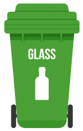

Green Bin



glass bottles,glass jars
Glass is separated into three different bins: white, brown and green. Blue or yellow bottles can go with green. Aluminium lids and corks belong in the yellow (=Wertstoffe) bin.
🛈 important to know
Broken drinking glasses or windows should not be thrown in the bottle and jar containers. They're made of a different type of glass that disrupts the recycling process.